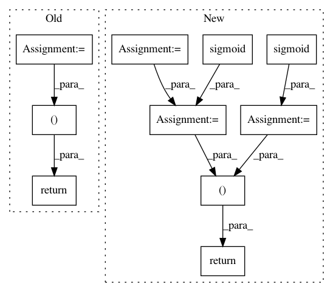

a784e98ebeb41f0001768cd02acf3301c7e50f0d,models/common/hlstm.py,HLSTMCell,forward,#HLSTMCell#Any#Any#Any#,16
Before Change
self.check_forward_hidden(input, hx[1], "[1]")
self.check_forward_hidden(input, c_l_minus_one, "c_l_minus_one")
hx = self.lstmcell(input, hx)
gate = F.sigmoid(self.gate(torch.cat([c_l_minus_one, hx[1], input], 1)))
return hx[0], hx[1] + gate * c_l_minus_one
if __name__ == "__main__":
rnn = HLSTMCell(10, 20)
rnn2 = HLSTMCell(20, 20)
After Change
// vanilla LSTM computation
rec_input = torch.cat([input, hx[0]], 1)
i = F.sigmoid(self.Wi(rec_input))
f = F.sigmoid(self.Wi(rec_input))
o = F.sigmoid(self.Wi(rec_input))
g = F.tanh(self.Wi(rec_input))
// highway gates
gate = F.sigmoid(self.gate(torch.cat([c_l_minus_one, hx[1], input], 1)))
c = gate * c_l_minus_one + f * hx[1] + i * g
h = o * F.tanh(c)
return h, c
if __name__ == "__main__":
T = 10
rnn = HLSTMCell(10, 20)
In pattern: SUPERPATTERN
Frequency: 3
Non-data size: 10
Instances
Project Name: stanfordnlp/stanza
Commit Name: a784e98ebeb41f0001768cd02acf3301c7e50f0d
Time: 2018-08-15
Author: qipeng@noreply.github.com
File Name: models/common/hlstm.py
Class Name: HLSTMCell
Method Name: forward
Project Name: rusty1s/pytorch_geometric
Commit Name: f6532b3c4c329e6d5d5fb846acc441df47616c4c
Time: 2020-03-22
Author: matthias.fey@tu-dortmund.de
File Name: torch_geometric/nn/models/gnn_explainer.py
Class Name: GNNExplainer
Method Name: explain_node
Project Name: tensorflow/ranking
Commit Name: 6bf3f51cd0a312da842157665663c2dad9983248
Time: 2021-01-29
Author: xuanhui@google.com
File Name: tensorflow_ranking/python/losses_impl.py
Class Name: ClickEMLoss
Method Name: _compute_latent_prob